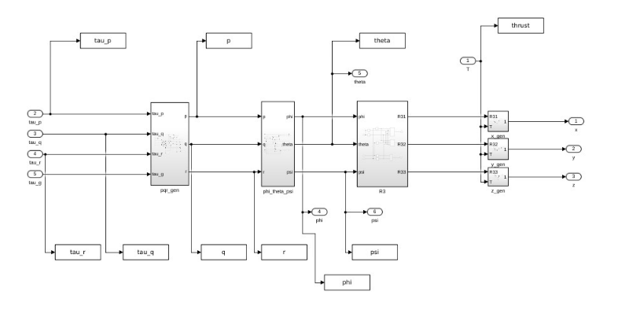
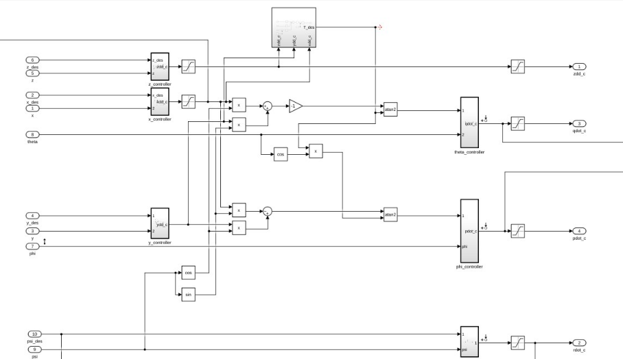
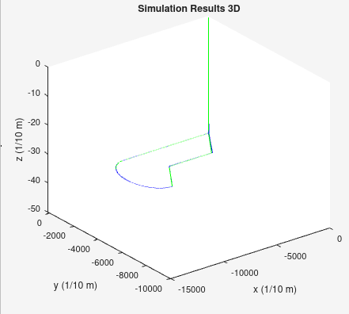
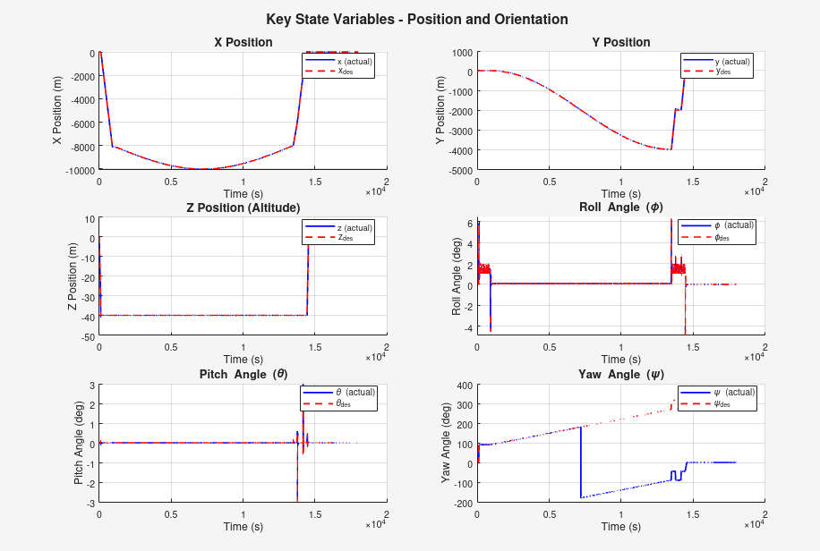
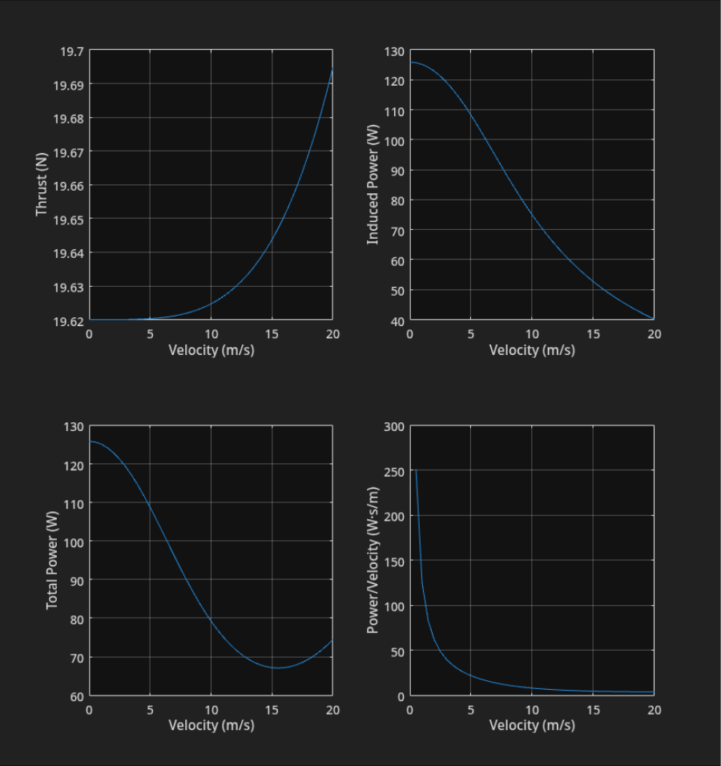

1.The brief
The course project asked for two low-cost UAS designs for Arctic operations. The fixed-wing patroller handles long-range reconnaissance. The multirotor is the courier: it takes off and lands vertically at posts with no runway and follows a specified path between them. Its budget covers the complete system, $2,000 against the patroller's $400 for propulsion.
| Requirement | Target | Design impact |
|---|---|---|
| Cost | ≤$2,000 CAD complete system | Flight controller, ESCs, motors, props and batteries all count |
| Battery | ≤2,600 mAh | Limits endurance, which depends mainly on hover power |
| Motors | 0.1 kg each (given) | Fixed mass the airframe has to carry |
| Takeoff | Vertical, to 30.48 m (100 ft) | No runway at remote posts |
| Route | Straight 800 m west, semicircle south to a second post, zigzag home, land | Three path types, scored on following accuracy |
| Model | Derive and implement the full dynamics | The dynamics had to be derived and built, not taken from a library block |
2.Vehicle dynamics
The course supplied a Simulink model with empty subsystems. We derived and implemented the dynamics in the NED convention used by the rotor model. The model computes body rates from torques, Euler angles from body rates, and a rotation matrix from the Euler angles that projects thrust into the Earth frame:
- Rotational: Euler's equations for the body rates p, q, r, driven by the rotor torques τφ, τθ, τψ plus the gyroscopic torque τg from the spinning rotors' inertia Jr.
- Kinematic: body rates mapped to Euler-angle rates through the full (not small-angle) transformation matrix, then integrated to φ, θ, ψ.
- Translational: collective thrust T rotated through R(φ, θ, ψ) into x, y, z accelerations, with gravity along +z, then integrated twice.

The rotor model is the standard X-quadrotor mixing. Each rotor makes thrust k·ωi² and reaction torque b·ωi², so collective thrust is T = kΣωi², roll and pitch torques are L·k times differences of opposite rotors' ω², and yaw torque is the signed sum of the reaction torques. The rotor-dynamics block runs this backwards: from commanded thrust and angular accelerations it solves for each ωi², takes the square root to get rotor speeds, and uses those speeds for the gyroscopic term. The course offered placeholder coefficients (k = 0.09, b = 0.07) if no component data was available; we used k = 3×10⁻⁶ and b = 1×10⁻⁷ (table below).
| Parameter | Value |
|---|---|
| Mass m | 2.00 kg |
| Inertia Ixx, Iyy, Izz | 0.10, 0.10, 0.20 kg·m² |
| Arm length L | 0.25 m |
| Thrust coefficient k | 3×10⁻⁶ N·s² |
| Drag-torque coefficient b | 1×10⁻⁷ N·m·s² |
| Rotor inertia Jr | 1×10⁻⁴ kg·m² |
3.Flight control
The controller is a three-level cascade: position errors command accelerations, accelerations command attitude, and attitude errors command body-rate changes that go to the rotor mixer.
- Altitude: PI on z, producing a vertical acceleration command.
- Lateral: separate PID loops on x and y, heavily damped to avoid overshoot at the corners.
- Yaw: PD producing a yaw-rate command.
- Roll and pitch: inner PD loops with derivative on measurement, so a setpoint step doesn't cause a derivative kick.
- Limits: acceleration commands saturate at ±2 m/s², body rates at 1.5 rad/s.
Roll, pitch, yaw, thrust and lateral acceleration are coupled, and a common simplification is to linearize that coupling around hover. We used the full nonlinear relations instead. The required thrust is the magnitude of the full commanded acceleration,
Tdes = m·√(ẍc² + ÿc² + (g + z̈c)²).
Pitch and roll setpoints come from atan2 of the lateral
acceleration command, rotated into the vehicle's heading by ψ,
against that thrust. The delivery route does not require large attitude angles, but the controller remains valid away from hover.

atan2 blocks turn them into pitch and roll setpoints; saturated attitude loops (right) output rate commands to the mixer.4.Flying the route
The mission is scripted as a waypoint stream: climb vertically to
30.48 m, hover, cruise at 40 m along a straight 800 m leg
west, sweep a semicircle south to the second post with the heading
turning to follow the path, return on a zigzag of diagonal and straight
legs, then descend and land at the base. A single
wait_time parameter scales the reference timing, which is
how cruise speed is set. The path is converted to Simulink time series
and the full nonlinear model flies it closed-loop.


Two features of FIG 4 need explanation. First, the yaw panel's apparent divergence from the midpoint on is angle wrapping, not a tracking error: the reference heading is unwrapped and keeps climbing past 180°, while the measured angle wraps into ±180°. Every offset in that panel is exactly 360° (320° commanded reads as −40° measured, for example). Second, the attitude transients cluster exactly where the path has corners, and the heavy lateral damping and the ±2 m/s² acceleration limit were chosen to limit them.
5.Hover and forward-flight power
The companion performance assignment sized a multirotor from the power side: a 2 kg hexarotor (1 kg vehicle plus 1 kg payload) on six APC 8×3.8 slow-flyer propellers at sea level. The airframe differs from the courier, but the same method applies to any multirotor:
- Hover power: ideal actuator-disk theory gives 125.87 W. Interpolating UIUC static-thrust data for the real propeller (7,021 RPM, CT = 0.1143, CP = 0.0481) gives 196.28 W, a figure of merit of 64.1%.
- At the battery: with 70% motor and 80% ESC efficiency, hover needs 350.5 W of electrical power.
- Endurance: a time-marched battery discharge model, run from the motor's torque, current (5.06 A) and voltage (7.63 V) at 735.2 rad/s, gives 174 s of hover on 1,162 mAh.
- Forward flight: solving the momentum equation for inflow at each airspeed shows induced power falling as speed rises. Total power reaches a minimum of about 67 W near 15 m/s, roughly half the ideal hover power.

6.Toolchain
- Simulink: rigid-body dynamics, rotor mixing, cascaded controller, time-series-driven mission
- MATLAB: waypoint planner, Euler-kinematics helper, 2D/3D path plotting, performance and battery models
- UIUC Propeller Data Site: static CT / CP for the hover operating point
7.Credits
Team project with Feiyang Wu and Clarence Zhang. The fixed-wing half of the same proposal is project 07; the quadrotor LQR / MPC work from the companion course is project 04.